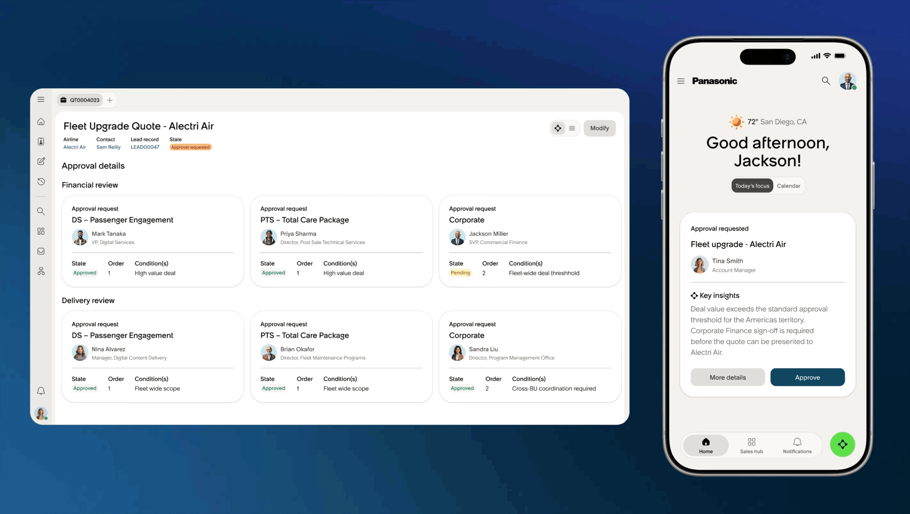
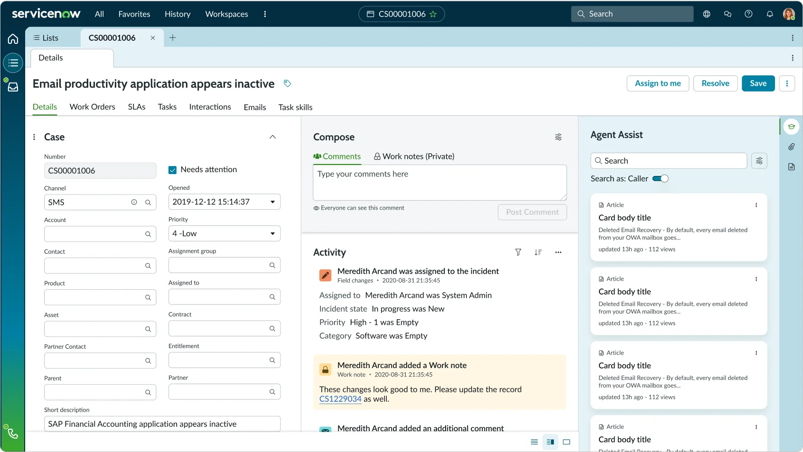
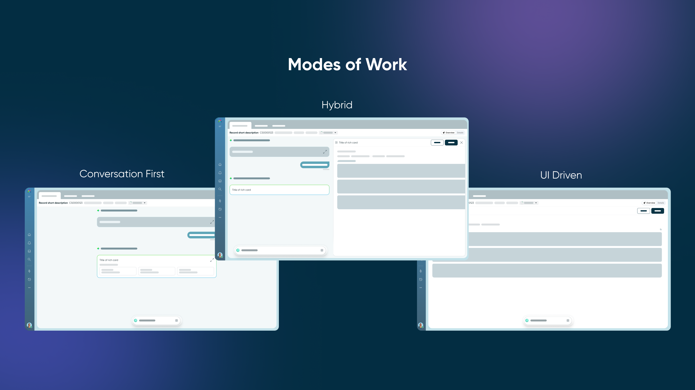

This project is currently in flight and confidential. All content shared here has been made publicly available by ServiceNow.

My Role
Manager and maker
My role on this project was a bit unusual. I was managing a staff designer and a principal designer, setting direction and helping the team navigate a genuinely ambiguous space. But due to headcount constraints, I was also contributing as an IC alongside them. It was one of those configurations that's challenging to maintain well, and honestly one of the more rewarding ways I've worked.
Problem
AI is reshaping enterprise support. Tooling hasn't kept pace.
As ServiceNow moves into an AI-native era, there's a real need to rethink how CSM and ITSM agents work together and alongside AI agents to resolve cases faster and with more confidence. That's the brief. But the problem my team helped surface went a level deeper.

The Problem We Helped Identify
The platform was following trends instead of following the work
At the platform level, a lot of the AI componentry was mirroring what was popular in the industry: giant prompt bars, big empty text response areas, lots of visual breathing room. It looks like AI. But it's not designed around how a support agent actually spends their day.


Sometimes a big conversational prompt experience is exactly right. But sometimes AI should just be quietly doing its job in the background, putting the right information in front of the right person without making a show of it. We needed to design for both of those realities, and everything in between. The real question wasn't where AI lives in the UI. It was which modes of AI interaction actually serve how these people work.
Framework
Overt, Integrated, Invisible
To give the team a shared lens, we developed a framework for thinking about how AI shows up in the support agent's workspace.
- Overt. The agent is actively working with AI. Direct input, direct response. This is the prompt bar experience most people picture when they think of "using AI," and it has real value for complex, open-ended tasks.
- Integrated. AI lives inside existing UI componentry rather than alongside it. The components themselves are rethought to behave better in an AI-native context: smarter defaults, contextual suggestions, behavior that adapts to the case at hand.
- Invisible. Probably the most impactful mode. AI is working in the background, surfacing the right context to the right person at the right moment. It doesn't call attention to itself. The experience just feels simpler and more tailored, the cognitive load drops, and the agent can focus on the work.
The most powerful AI experience might be the one the agent never notices — because everything they need is already there.
Modes of Working
Giving agents flexibility in how they work

On top of the Overt, Integrated, Invisible framework, we also wanted to give users real flexibility in how they actually engage with their workspace day to day. Different case types call for different ways of working, and we didn't want to force everyone into the same experience.
For simpler cases, a fully conversational interface makes sense. The agent can just talk to it. For most everyday work, a hybrid view works well — some structure, some conversation, the best of both. And for the complex, detail-heavy cases where an agent really needs to get into the weeds, a more traditional UI-driven layout gives them the control and density they need.
- Conversation First. A chat-forward experience for cases where talking through the problem is the most natural way to work. Lower friction, lower cognitive overhead.
- Hybrid. A balanced view that combines conversational input with structured UI components. The sweet spot for most agents on most days.
- UI Driven. A dense, component-rich workspace for complex cases that require deep context, multiple data sources, and careful decision-making.
We spent a lot of time talking to different types of agents at companies of all sizes — understanding the full range of how people actually work day to day. From there, we moved into generative and highly collaborative research sessions with these users to pressure-test our thinking and build the framework from the ground up with them.

Building on what we learned, we were able to think beyond just interaction patterns — exploring how our existing architecture could evolve to support this new organizational paradigm.

Design Context
Designing for the 20% that matters most
There's a real shift underway in enterprise support. AI agents are becoming capable of fully resolving around 80% of incoming cases on their own. That changes what it means to be a human agent in a meaningful way.
The remaining 20% are the difficult ones: complex, high-stakes cases where a human steps in partway through, often picking up a case that an AI agent has already been working. Getting that handoff right, making sure the human agent has full context and the confidence to act, became one of the most important design challenges we worked through.

Making sure agents land on a space that feels immediately valuable and personalized to them — surfaced intelligently by AI.

An example of a case view where information is surfaced intelligently to the agent.
Challenges
Advocating up and across the organization
This is where my role as a senior manager came into focus. Pressure-testing platform decisions meant I was spending real time with PMs and VPs on the platform side, advocating for use cases that were specific, consequential, and easy to deprioritize in a large organization.
That kind of cross-functional alignment is unglamorous work, but it's often what determines whether good design thinking actually lands. In this case it did. We were able to connect platform strategy to the real workflows of CSM teams, one of ServiceNow's fastest-growing areas of business, in a way that wouldn't have happened without someone in the room making that case.